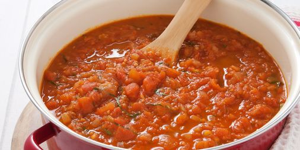

NYs Tomato Pasta

Ingredients
Looking to get some of your 5 a day while simultaneously carbing up? Say no more, we gotcha.
This is also a great way to get rid of a tonne of Veg in the fridge
- 300g Quorn Pieces
- 2 Cans of Chopped Tomatoes
- 2 Large Onions
- 4 Carrots
- 5 Sticks of Celery
- 8 Cloves of garlic (use less dependant on preference)
- 1 Veg stock cube
- 3 Globs frozen spinach
- Hearty handful of frozen peas, sweetcorn
- Garlic granules
- Soy sauce
- Ketchup, 2.5 Tablespoons
- NYs secret seasoning
Steps
- Chop all the fresh vegtables, throw together in a skillet on a medium heat. Throw a bunch of water in the bottom if you want to AFK on the mixing.
- Once the veg has softened, add garlic and mix around.
- Add the cans of chopped tomatoes and the rest of the seasonings (ketchup, soy sauce, stock cubes, garlic granules, NYs magic touch)
- Mix together and let sauce cook for 10 minutes.
- Add the frozen vegtables and Quorn pieces. Cook for another 10 minutes.
- Congrats! You can now enjoy a Nantcarn road classic.